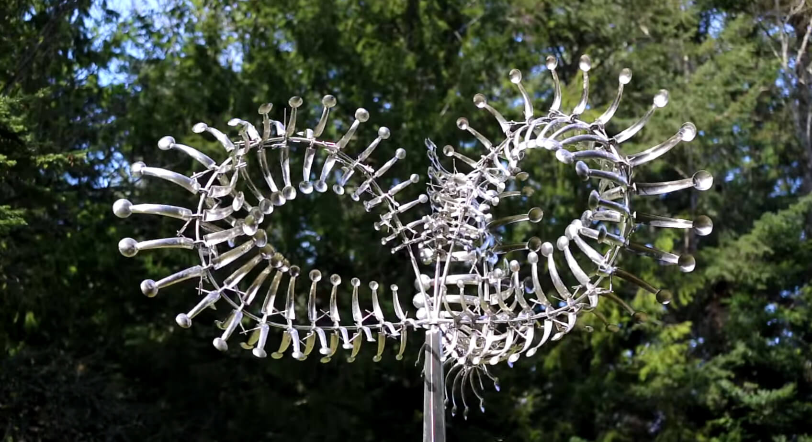
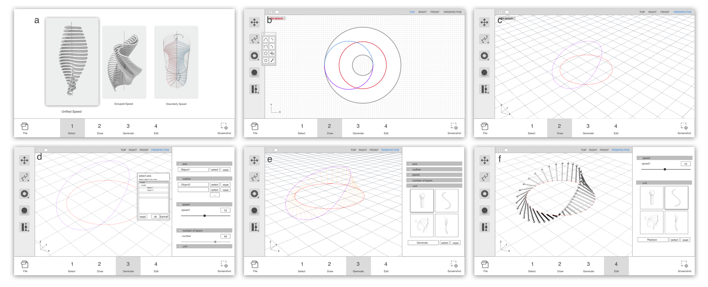
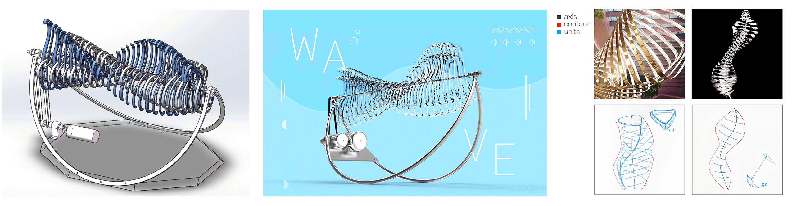
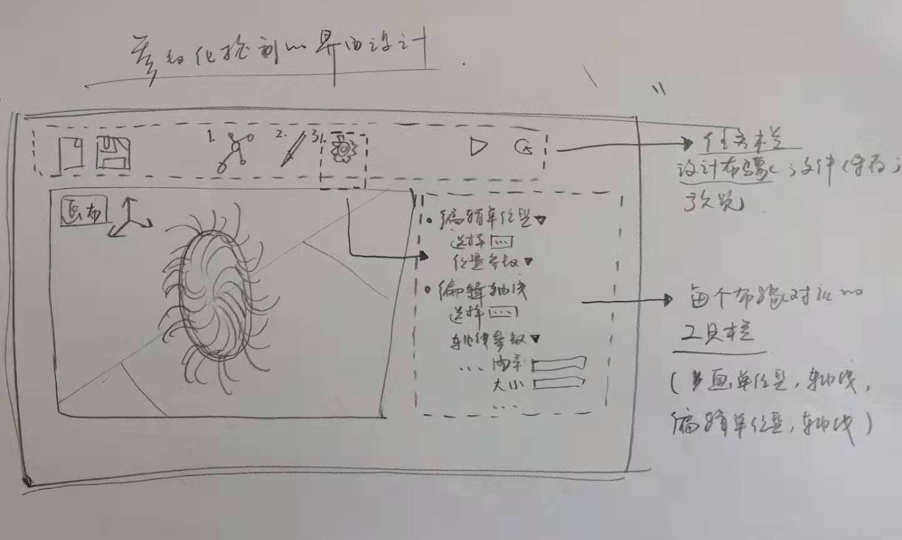
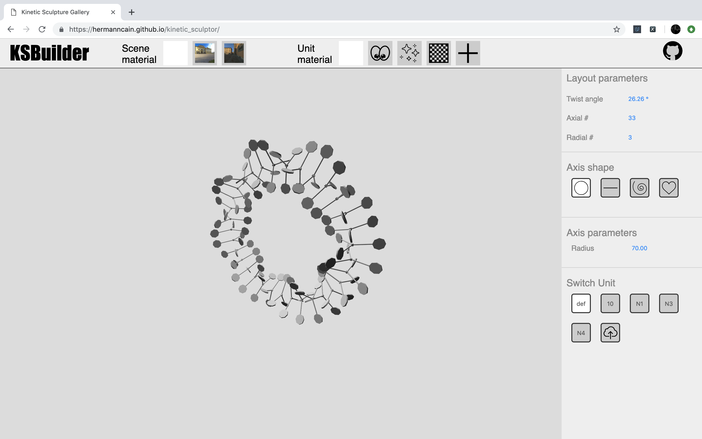
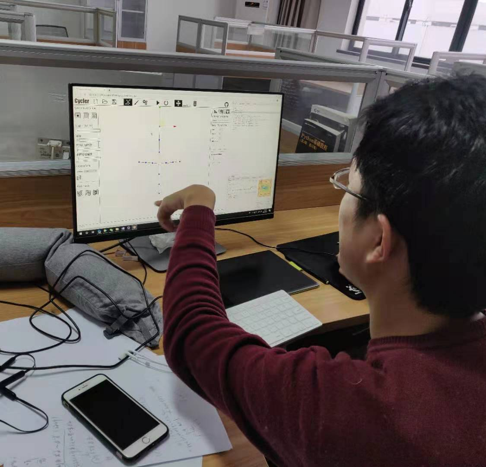

With the diversification of designs in sculpture, the manifestation gradually lay more emphases on the four-dimensional (4D) space, which refers to time. Numerous works of this type have been created by artists since the early 20th century.
Designed by Anthony Howe, the flame brazier in the 2016 Rio Summer Olympics was one of them. Featuring its advantages on expressivity of products and diversity of functions, the dynamic design is becoming a new trend of designing.

Many 3D artists prefer using Cinema 4D (a 3D modeling, animation, motion graphics, and rendering application developed by MAXON) to create prototypes when designing dynamic artwork. Use of such a program creates a problem:
We showcase a method of solving the above problem: we introduce a prototyping tool for kinetic sculpture design. By editing the sketches in the user interface, the designer can generate lo-fi simple 3D models and animation without difficulty.
We present users’ feedback to verify the usability of our system. The program presents a more efficient package for both experts and novices who wish to instantiate ideas quickly and without hassle. Our work should help to acquaint artists from different backgrounds with this art form.

The initial idea
Computers can easily repeat basic elements to achieve demonstrate complex aesthetics.However, those tools needed codes and math is not suitable for designers who unfamiliar with digital design.
We aimed to lower the threshold of dynamic multi-unit modeling prototype design and encourages designers from different backgrounds to engage in kinetic sculpture.
Design Process
We researched many aspects of dynamic artists’ work, including watching videos of kinetic sculpture, interviewing the artists, and creating prototypes ourselves in order to extract a simple prototype design method.We found modeling and simulation takes a lot of time during this process.A simple drawing can easily lead to a kinetic structure,there are three basic elements that feature in kinetic sculpture: axis , contour , and unit.

I usually start the design process with low fidelity wireframes. This is the way I iterate through many design options quickly.

Luckily one of our developers help us build a usable prototype where he implemented a web tool to create simple models based on sketches and model library.You can experience the demo here

User Testing Sessions
We conducted an onsite usability test using our demo .The session captured each participant’s navigational choices, task completion rates, comments, overall satisfaction ratings, questions and feedback.

Late Breaking Works